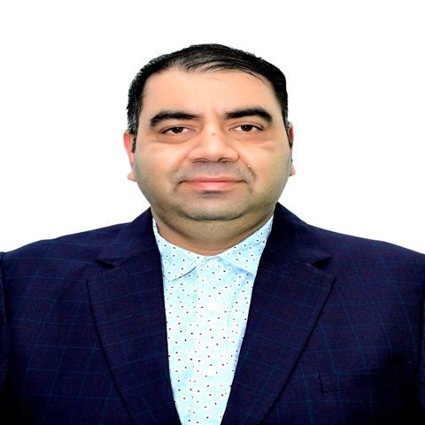

As Director of Engineering and Chapter Lead at Boston Consulting Group, I lead a 50+ member global engineering organization out of India, and I was the product and technical owner of BCG Ombudsman, the firm's employee grievance platform. I own the roadmap, budget, and delivery for AI-powered engineering and release-intelligence work.
Grown over 21 years from a hands-on engineer into an engineering leader, I've worked across regulated healthcare, financial services, and enterprise platforms, including specialty-pharmacy work at CVS Health and RxCrossroads, and BFSI clients like Morgan Stanley, Bridgewater Associates, and Western Asset Management. I filed a patent for an agentic AI platform.
I'm also the AI architect behind Release Risk Radar, a multi-tenant RAG platform I designed and built end to end. It ingests JIRA tickets, GitHub diffs, and test-coverage data to score release risk, flag coverage gaps, and surface recurring bug patterns, running on FastAPI, React, ChromaDB, PostgreSQL, and Azure OpenAI, with JWT-based tenant isolation and deployed on Azure. I was an invited panelist at AI TestFest 2026 on AI-driven quality engineering.
Own the roadmap, budget, and delivery for a 50+ member global engineering organization out of India. Product and technical owner of BCG Ombudsman, the firm's employee grievance platform. Also led engineering across major HR-technology platforms, including Workday, Eightfold AI, iCIMS, the Saba learning platform, and custom-built internal applications.
Progressed from Lead Consultant to Principal Consultant to Senior Principal Consultant over 11 years. Partnered with Morgan Stanley, Bridgewater Associates, and Western Asset Management on trading and asset-management platforms, and with CVS Health and RxCrossroads on specialty-pharmacy engagements.
Early career across financial, insurance, and banking platforms, building the QA and automation foundations that led into engineering leadership.